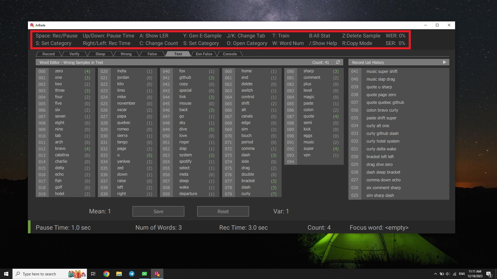
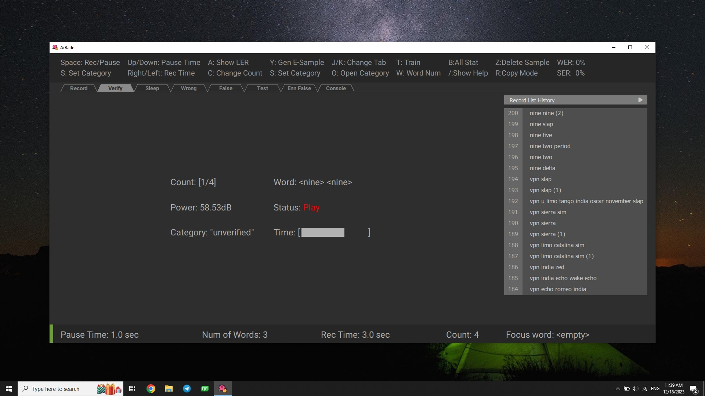

ArBade
Features:
- Building dataset for voice recognition engine by recording voice samples
- Handy tool to train and test voice samples
- Environment to verify online samples generated while using BaTool
- Verify samples generated in sleep mode to detect while not speeking with voice recognition engine.
- Review wrong words after verifying sleep samples.
- Verify triphone engine misclassified samples.
- Console environment to train on samples.
User Guide
Quick Start
ArBade has many tabs, explained in the following. To change tab click or press numbers on keyboard starting from 1.
ArBade is a shortcut based application. Shortcuts are listed in the application topbar.

To see all shortcuts, press /.
First step is to train a model from your voice.
Record Samples
-
specify a category name by pressing
S. category name is used to distinguish between speaker or microphone. -
Start to record by pressing
space. Say the words specified between<>while status isRec.

You can pause the Record procedure any time by using space and get out of record panel by pressing Escape. Then Statistics will be updated.

- Arbitrary name of category.
- Record list showing the samples recorded.
- Word list showing how many samples include the specific word.
- sample count in specific category.
Detailed description about record parameters and procedure can be found in the User Guide
Train Model
After recording around 10 x Wordlist samples, you are ready to train your model by Pressing T.
At any time outside of terminal, by pressing P or clicking on Console tab, you can access the results of running train scripts in terminal. All the train procedure is automatic and you should only wait for the dialog indicating train is finished and now it's ENN samples generation turn.

And verifying engine false generated samples.

Detailed description about train steps and procedure can be found in User Guide
Verification
When you are using Benjamin regularly, samples will be generated when issueing commands or recorded when in sleep mode saying ordinary words. To use these samples, you need to assure that they are matched with the detected words. For verifying these samples you can switch to Verify tab and press space to start verification process. While verifying sleep mode samples, make sure that all words are detected wrong. Verifying

If the sample is wrong press Z to delete sample, while playing or at Decide Pause status after voice stopped. By default after playing each sample in unverified category, if there wasn't any key press, the sample will be verified. you can change this behaviour by pressing R.
Detailed description about verification parameters and procedure can be found in User Guide
Congrats! Now you know the very initial steps to train your model!